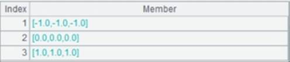

Description:
Read contents of a file and return result as strings.
Syntax:
f.read(b:e)
Note:
The function reads in the contents of file f from the bth byte to the eth byte and returns the substring.
Parameter:
|
f |
A file |
|
b |
A byte number beginning from 0 |
|
e |
A byte number beginning from 0 |
Option:
|
@n |
Return the contents of the file object f as a string sequence; each row is corresponding to a member. |
|
@v |
Return a sequence as the corresponding data type. The combined use of this option and @n is acceptable |
|
@0 |
Read the file once and return the total number of bytes in it; used for test |
Return value:
A string
Example:
|
|
A |
|
|
1 |
=file("D:/score.txt") |
|
|
2 |
=A1.read() |
Read the contents of file object score.txt as a string
|
|
3 |
=A1.read@n() |
With @n option, read and concatenate each line in the text file into a string and return it as a member of the resulting sequence
|
|
4 |
=file("D:/tmp2.txt") |
|
|
5 |
=["Lucy",98] |
By default Lucy is a string and 98 is an integer |
|
6 |
=A4.write(A5) |
|
|
7 |
=A4.read@nv() |
With @nv options, return a sequence consisting of rows of different data types
|
|
8 |
=A1.read@b() |
Read the text file as the binary blob data
|
|
9 |
=file("atoz.txt").read() |
Read in content of atoz.txt  |
|
10 |
=file("atoz.txt").read(2:7) |
Read in content of atoz.txt from the 2nd byte to the 7th byte
|
|
11 |
=file("atoz.txt").read@0() |
Use @0 option to return the total number of byte in atoz.txt; the result is 26 |


Related function: